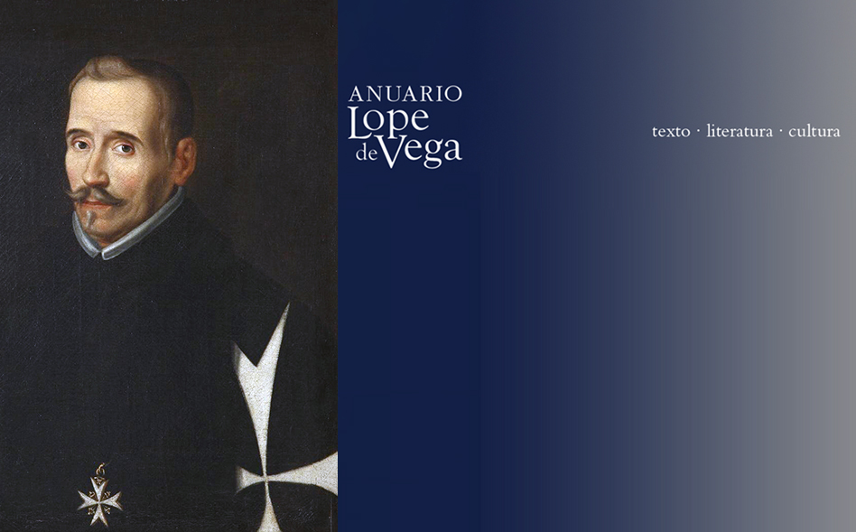

Nos complace anunciar la aparición del último número, el XXII (2016), del Anuario Lope de Vega. Texto, Literatura, Cultura
Se trata de un volumen dedicado a Lope y la Edad de Plata, que ha contado con la coordinación de Domingo Ródenas.
Tabla de contenidos
PRESENTACIÓN. SECCIÓN MONOGRÁFICA 1
Lope y la Edad de Plata
DOMINGO RÓDENAS DE MOYA
ARTÍCULOS. SECCIÓN MONOGRÁFICA 1
Carpintería teatral en «La dama boba» lorquiana: Lope a ritmo de Molière
ALBA AGRAZ-ORTIZ
«ABC» en el tricentenario de Lope de Vega: una utilización del Fénix y su obra con fines ideológicos
MARÍA ÁLVAREZ ÁLVAREZ
Los mil y un Lopes de Diego
JOSÉ LUIS BERNAL SALGADO
Miguel Hernández y la poesía de Lope (1935-1936)
FRANCISCO JAVIER DÍEZ DE REVENGA
«Beneméritos cruzados de la cultura española»: el tricentenario de Lope en el ámbito conservador español
VÍCTOR GARCÍA RUIZ
El Lope hegemónico y el Lope subalterno del tricentenario
JUAN HERRERO SENÉS
Música para una celebración literaria: el tercer centenario de Lope de Vega y el Premio Nacional de Música de 1935
CARLOS LÓPEZ GALARZA
La Barraca, 1933: el giro lopiano de García Lorca
DAVID RODRÍGUEZ-SOLÁS
Ezra Pound, «lopista»
GAYLE ROGERS
En el tricentenario de Lope de Vega: «La Dorotea» de Eduardo Marquina
ANTONELLA RUSSO
Lope de Vega de ultratumba: tres calas fantasmales en la recepción póstuma del Fénix
ANTONIO SÁNCHEZ JIMÉNEZ
De Lorca a Lope
ANDRÉS SORIA OLMEDO
Actividad editorial en torno al tricentenario de Lope de Vega
MARÍA JOSÉ ZAMORA MUÑOZ
ARTÍCULOS. SECCIÓN MISCELÁNEA
Lope de puntillas: el estreno del ballet «Laurencia» en Leningrado (1939)
MARIA CHIGINSKAYA
Un fondo semidesconocido de obras (¿y una cuarteta autógrafa?) de Lope: la Bibliotheca Bodmeriana
DANIELE CRIVELLARI
Sobre la fuente, las circunstancias de creación y la fecha del «Diálogo militar a honor de Espínola», de Lope de Vega
FERNANDO RODRÍGUEZ-GALLEGO
Proxemia y espacio dramático en el teatro pastoril del primer Lope de Vega
FRANCISCO SÁEZ RAPOSO
RESEÑAS
¿Miguel de Cervantes?, La conquista de Jerusalén por Godofre de Bullón, ed. A. Rodríguez López-Vázquez
FAUSTA ANTONUCCI
Lope de Vega (atribuida), El alcalde de Zalamea, ed. A. Rodríguez López-Vázquez
SÒNIA BOADAS
Miguel Zugasti, Ester Abreu Vieira de Oliveira y Maria Mirtis Caser, eds., El teatro barroco: textos y contextos. Actas selectas del Congreso Extraordinario de la AITENSO
ESTHER BORREGO GUTIÉRREZ
Maria Grazia Profeti, Lo trágico y lo cómico mezclado, ed. A. Jurado Santos
ENRICO DI PASTENA
Emilio Pasquini, ed., Studi e problemi di critica testuale: 1960-2010. Per i 150 anni della Commissione per i testi di lingua
GIUSEPPE DI STEFANO
Veronika Ryjik, Lope de Vega en la invención de España – Oana Andreia Sâmbrian, Mariela Insúa y Antonie Mihail, eds., La voz de Clío – Guillem Usandizaga, La representación de la historia contemporánea en el teatro de Lope de Vega
JUAN MANUEL ESCUDERO BAZTÁN
Bárbara Mujica, A New Anthology of Early Modern Spanish Theater. Play and Playtext
ESTHER FERNÁNDEZ
Mirzam C. Pérez, The Comedia of Virginity: Mary and the Politics of Seventeenth-Century Spanish Theater
NATALIA FERNÁNDEZ
Bárbara Mujica, ed., Shakespeare and the Spanish «Comedia». Translation, Interpretation, Performance. Essays in Honor of Susan L. Fischer
ALEJANDRO GARCÍA-REIDY
Josefa Badía Herrera, Los primeros pasos en la comedia nueva. Textos y géneros en la colección teatral del conde de Gondomar
LUIGI GIULIANI
Ignacio Arellano y Juan Antonio Martínez Berbel, eds., Violencia en escena y escenas de violencia en el Siglo de Oro
RENATA LONDERO
Lope de Vega, Romances de juventud, ed. A. Sánchez Jiménez
FELIPE B. PEDRAZA JIMÉNEZ
Lope de Vega Carpio, Tirso de Molina, Miguel de Cervantes, Il teatro dei Secoli d’oro, coord. M.G. Profeti
MARCELLA TRAMBAIOLI
Creneida. Anuario de literaturas hispánicas, monográfico Filología de autor y Crítica genética frente a frente
JOAN RAMON VENY-MESQUIDA